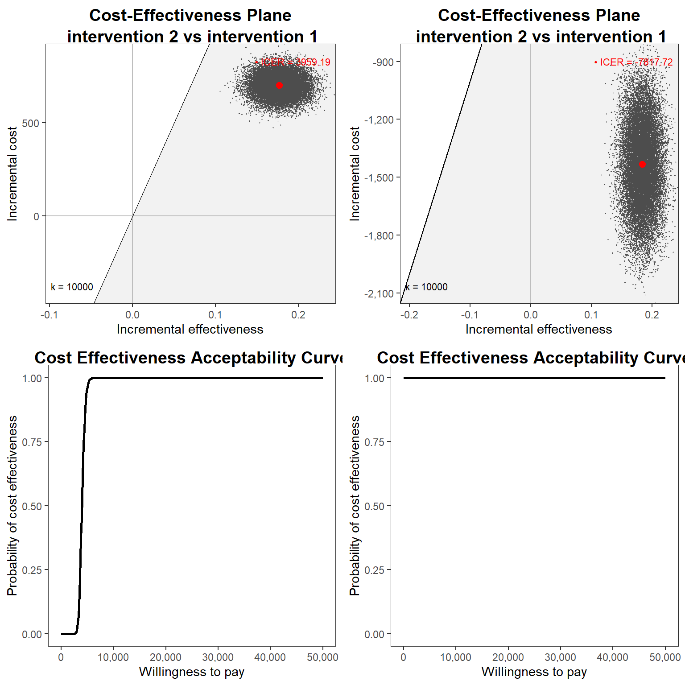

![]()
set.seed(768)
n <- 300
id <- seq(1:n)
trt <- c(rep(0, n/2),rep(1, n/2))
mean_e1 <- c(0.5)
mean_e2 <- c(0.7)
sigma_e <- 0.15
tau1_e <- ((mean_e1*(1-mean_e1))/(sigma_e^2)-1)
tau2_e <- ((mean_e2*(1-mean_e2))/(sigma_e^2)-1)
alpha1_beta <- tau1_e*mean_e1
beta1_beta <- tau1_e*(1-mean_e1)
alpha2_beta <- tau2_e*mean_e2
beta2_beta <- tau2_e*(1-mean_e2)
e1 <- rbeta(n/2, alpha1_beta, beta1_beta)
e2 <- rbeta(n/2, alpha2_beta, beta2_beta)
mean_c1 <- 500
mean_c2 <- 1000
sigma_c <- 300
tau1_c <- mean_c1/(sigma_c^2)
tau2_c <- mean_c2/(sigma_c^2)
ln.mean_c1 <- log(500) + 5*(e1-mean(e1))
c1 <- rgamma(n/2, (exp(ln.mean_c1)/sigma_c)^2, exp(ln.mean_c1)/(sigma_c^2))
ln.mean_c2 <- log(1000) + 5*(e2-mean(e2)) + rgamma(n/2,0,tau2_c)
c2 <- rgamma(n/2, (exp(ln.mean_c2)/sigma_c)^2, exp(ln.mean_c2)/(sigma_c^2))
QALYs <- c(e1,e2)
Costs <- c(c1,c2)
data_sim_ec <- data.frame(id, trt, QALYs, Costs)
data_sim_ec <- data_sim_ec[sample(1:nrow(data_sim_ec)), ]Bayesian statistics in health economic evaluations - part 2
Quarto
R
Academia
health economics

Hello dear audience and welcome back to my regular post updates. This time I would like to continue discussing the application of Bayesian methods in HTA that I picked-up in my previous post and show some customisation options of the modelling strategy that may come in handy when dealing with such analyses. More specifically, a notorious problem affecting trial-based economic evaluations is the presence of skewed data which, when coupled with small sample sizes, may question the validity of mean estimate based on normal distribution assumptions. In the previous post I provided a simple modelling framework based on normal distributions for both CEA aggregated outcomes, namely effectiveness (usually in terms of QALYs) and total costs computed over the study period. Today, I would like to show how, within a Bayesian setting, the use of alternative parametric distributions is relatively simple and allows to tackle issues such as skewness while simultaneously dealing with uncertainty quantification for each unknown quantity in the model. This is extremely helpful in that there is no need to reply on re-sampling methods (e.g. bootstrapping) to generate uncertainty around the desired estimates and to combine such methods with alternative modelling approaches, e.g. need to specify how bootstrapping should be done when using non-Normal distributions, multilevel models, or even missing data.
Let’s take the same example I simulated in my previous post and re-perform the exact same analysis based on Normal distributions and then try to compare its results to an analysis based on alternative, more flexible, parametric distributions that can better capture the features of the data (e.g. skewness). We start by simulating some non-Normal bivariate cost and QALY data from an hypothetical study for a total of \(300\) patients assigned to two competing intervention groups (\(t=0,1\)). When generating the data, we can try to mimic the typical skewness features of the outcome data by using alternative distributions such as Gamma for costs and Beta for QALYs.
We can now inspect the empirical distributions of the two outcomes by treatment group to have an idea of the level of the associated skewness.
#scatterplot of e and c data by group
library(ggplot2)
data_sim_ec$trtf <- factor(data_sim_ec$trt)
levels(data_sim_ec$trtf) <- c("old","new")
data_sim_ec$trtf <- factor(data_sim_ec$trt)
levels(data_sim_ec$trtf) <- c("old","new")
QALY_hist <- ggplot(data_sim_ec, aes(x=QALYs))+
geom_histogram(color="black", fill="grey")+
facet_grid(trtf ~ .) + theme_classic()
Tcost_hist <- ggplot(data_sim_ec, aes(x=Costs))+
geom_histogram(color="black", fill="grey")+
facet_grid(trtf ~ .) + theme_classic()
gridExtra::grid.arrange(QALY_hist, Tcost_hist, nrow = 1, ncol = 2)
Step 1: fit a standard normal model
As in the previous post, we rely on factoring the joint distribution \(p(e,c\mid \boldsymbol \theta)\) into the product of a marginal distribution \(p(e\mid \boldsymbol \theta_e)\) of the effects and a conditional distribution \(p(c \mid e, \boldsymbol \theta_c)\) of the cost given the effects, each indexed by corresponding set of parameters. We can rely on the freely-available Bayesian software named JAGS to fit the model. We write the model code into a txt file and save it into our current wd to be called from R. Then, we load the package R2jags which allows to call the software from R through the function jags and after providing the data and some technical parameters needed to run the model.
#save data input
n <- dim(data_sim_ec)[1]
QALYs <- data_sim_ec$QALYs
Costs <- data_sim_ec$Costs
trt <- data_sim_ec$trt
#load package and provide algorithm parameters
library(R2jags)
set.seed(2345) #set seed for reproducibility
datalist<-list("n","QALYs","Costs","trt") #pass data into a list
#set up initial values for algorithm
inits1 <- list(.RNG.name = "base::Wichmann-Hill", .RNG.seed = 1)
inits2 <- list(.RNG.name = "base::Wichmann-Hill", .RNG.seed = 2)
#set parameter easimates to save
params<-c("beta0","beta1","gamma0","gamma1","gamma2","s_c","s_e","nu_c","nu_e")
filein<-"model_bn.txt" #name of model file
n.iter<-20000 #n of iterations
#fit model
jmodel_bn<-jags(data=datalist,inits=list(inits1,inits2),
parameters.to.save=params,model.file=filein,
n.chains=2,n.iter=n.iter,n.thin=1)Compiling model graph
Resolving undeclared variables
Allocating nodes
Graph information:
Observed stochastic nodes: 600
Unobserved stochastic nodes: 7
Total graph size: 1522
Initializing modelWe then proceed to extract the key quantities of interest of this analysis by post-processing the model estimates via simulation methods, with the aim to obtain the mean effects and costs outcome posterior distributions \((\mu_e,\mu_c)\) in each treatment group.
#obtain estimates of means by arm
#extract estimates for each mean parameter by trt group
nu_e0 <- jmodel_bn$BUGSoutput$sims.list$nu_e[,trt==0]
nu_e1 <- jmodel_bn$BUGSoutput$sims.list$nu_e[,trt==1]
nu_c0 <- jmodel_bn$BUGSoutput$sims.list$nu_c[,trt==0]
nu_c1 <- jmodel_bn$BUGSoutput$sims.list$nu_c[,trt==1]
#extract estimates for std
s_e <- jmodel_bn$BUGSoutput$sims.list$s_e
s_c <- jmodel_bn$BUGSoutput$sims.list$s_c
#create empty vectors to contain results for means by trt group
mu_e0 <- mu_c0 <- c()
mu_e1 <- mu_c1 <- c()
#set number of replications
L <- 5000
set.seed(2345) #set seed for reproducibility
#generate replications and take mean at each iteration of the posterior
for(i in 1:n.iter){
mu_e0[i] <- mean(rnorm(L,nu_e0[i,],s_e[i]))
mu_e1[i] <- mean(rnorm(L,nu_e1[i,],s_e[i]))
mu_c0[i] <- mean(rnorm(L,nu_c0[i,],s_c[i]))
mu_c1[i] <- mean(rnorm(L,nu_c1[i,],s_c[i]))
}
#calculate mean differences
Delta_e <- mu_e1 - mu_e0
Delta_c <- mu_c1 - mu_c0Step 2: fit a Beta-Gamma model
As a comparative approach, we now try to directly address the skewness in the observed data by using a Beta distribution for modelling the QALYs and a Gamma distribution for the Total costs. The main idea is that, by using distributions that can naturally allow for non-symmetric data, estimates will likely be more robust and uncertainty concerning such estimates will be more properly quantified. We begin by writing the model file and save it as a txt file.
model_bg <- "
model {
#model specification
for(i in 1:n){
QALYs[i]~dbeta(shape1[i],shape2[i])
shape1[i]<-nu_e[i]*(nu_e[i]*(1-nu_e[i])/pow(s_e,2) - 1)
shape2[i]<-(1-nu_e[i])*(nu_e[i]*(1-nu_e[i])/pow(s_e,2) - 1)
logit(nu_e[i])<-beta0 + beta1*trt[i]
Costs[i]~dgamma(shape[i],rate[i])
shape[i]<-pow(nu_c[i],2)/pow(s_c,2)
rate[i]<-nu_c[i]/pow(s_c,2)
log(nu_c[i])<-gamma0 + gamma1*trt[i] + gamma2*QALYs[i]
}
#prior specification
s_c ~ dunif(0,1000)
s_e_limit<- sqrt(0.5885263*(1-0.5885263))
s_e ~ dunif(0,s_e_limit)
beta0 ~ dnorm(0,0.001)
beta1 ~ dnorm(0,0.001)
gamma0 ~ dnorm(0,0.001)
gamma1 ~ dnorm(0,0.001)
gamma2 ~ dnorm(0,0.001)
}
"
writeLines(model_bg, con = "model_bg.txt")We then proceed to pass the data and algorithm parameters to fit the model in JAGS. It is important to stress that, since Gamma and Beta are defined within bounds of \((0,+\infty)\) and \((0,1)\), then we need to “modify” the data to ensure that such extremes are not present (in case they occur). This is often done by adding/subtracting a small constant to the data.
#save data input
n <- dim(data_sim_ec)[1]
QALYs <- data_sim_ec$QALYs - 0.001
Costs <- data_sim_ec$Costs + 0.001
trt <- data_sim_ec$trt
#load package and provide algorithm parameters
library(R2jags)
set.seed(2345) #set seed for reproducibility
datalist<-list("n","QALYs","Costs","trt") #pass data into a list
#set up initial values for algorithm
inits1 <- list(.RNG.name = "base::Wichmann-Hill", .RNG.seed = 1)
inits2 <- list(.RNG.name = "base::Wichmann-Hill", .RNG.seed = 2)
#set parameter easimates to save
params<-c("beta0","beta1","gamma0","gamma1","gamma2","s_c","s_e","nu_c","nu_e",
"shape","rate","shape1","shape2")
filein<-"model_bg.txt" #name of model file
n.iter<-20000 #n of iterations
#fit model
jmodel_bg<-jags(data=datalist,inits=list(inits1,inits2),
parameters.to.save=params,model.file=filein,
n.chains=2,n.iter=n.iter,n.thin=1)Compiling model graph
Resolving undeclared variables
Allocating nodes
Graph information:
Observed stochastic nodes: 600
Unobserved stochastic nodes: 7
Total graph size: 2739
Initializing modelWe then proceed to extract the key quantities of interest of this analysis by post-processing the model estimates via simulation methods, with the aim to obtain the mean effects and costs outcome posterior distributions \((\mu_e,\mu_c)\) in each treatment group.
#obtain estimates of means by arm
#extract estimates for each mean parameter by trt group
shape1_e0 <- jmodel_bg$BUGSoutput$sims.list$shape1[,trt==0]
shape1_e1 <- jmodel_bg$BUGSoutput$sims.list$shape1[,trt==1]
shape2_e0 <- jmodel_bg$BUGSoutput$sims.list$shape2[,trt==0]
shape2_e1 <- jmodel_bg$BUGSoutput$sims.list$shape2[,trt==1]
shape_c0 <- jmodel_bg$BUGSoutput$sims.list$shape[,trt==0]
shape_c1 <- jmodel_bg$BUGSoutput$sims.list$shape[,trt==1]
rate_c0 <- jmodel_bg$BUGSoutput$sims.list$rate[,trt==0]
rate_c1 <- jmodel_bg$BUGSoutput$sims.list$rate[,trt==1]
scale_c0 <- 1/rate_c0
scale_c1 <- 1/rate_c1
#create empty vectors to contain results for means by trt group
mu_e0_bg <- mu_c0_bg <- c()
mu_e1_bg <- mu_c1_bg <- c()
#set number of replications
L <- 5000
set.seed(2345) #set seed for reproducibility
#generate replications and take mean at each iteration of the posterior
for(i in 1:n.iter){
mu_e0_bg[i] <- mean(rbeta(L,shape1 = shape1_e0[i,], shape2 = shape2_e0[i]))
mu_e1_bg[i] <- mean(rbeta(L,shape1 = shape1_e1[i,], shape2 = shape2_e1[i]))
mu_c0_bg[i] <- mean(rgamma(L,shape = shape_c0[i,],scale = scale_c0[i]))
mu_c1_bg[i] <- mean(rgamma(L,shape = shape_c1[i,],scale = scale_c1[i]))
}
#calculate mean differences
Delta_e_bg <- mu_e1_bg - mu_e0_bg
Delta_c_bg <- mu_c1_bg - mu_c0_bgAt this point it would be wise to check the results of both models and compare them in terms of some measures of relative or absolute performance, such as information criteria or posterior predictive checks. In general, the idea is that IC should reveal a better performance of the distributions that better fit the observed data, while PPCs can be used to detect possible problems in the model replications that may fail to capture some aspects of the observed data. These can be used to decide which model should be trusted more in terms of relative fit to the data. For the sake of simplicity, here I omit these comparisons as it is something I would like to dedicate a more substantial discussion.
Finally, we can then produce all standard CEA output, e.g. CEAC or CE Plane, by post-processing these posterior distributions and compare the cost-effectiveness results of the two models fitted. If you want to skip the fun, we can take advantage of the R package BCEA which is dedicated to post-processing the results from a Bayesian CEA model.
#load package and provide means e and c by group as input
library(BCEA)
mu_e_bn <- cbind(mu_e0,mu_e1)
mu_c_bn <- cbind(mu_c0,mu_c1)
mu_e_bg <- cbind(mu_e0_bg,mu_e1_bg)
mu_c_bg <- cbind(mu_c0_bg,mu_c1_bg)
#produce CEA output
cea_res_bn <- bcea(eff = mu_e_bn, cost = mu_c_bn, ref = 2)
cea_res_bg <- bcea(eff = mu_e_bg, cost = mu_c_bg, ref = 2)
#CE Plane (set wtp value)
cep_bn <- ceplane.plot(cea_res_bn, graph = "ggplot2", wtp = 10000)
cep_bg <- ceplane.plot(cea_res_bg, graph = "ggplot2", wtp = 10000)
#CEAC
ceac_bn <- ceac.plot(cea_res_bn, graph = "ggplot2")
ceac_bg <- ceac.plot(cea_res_bg, graph = "ggplot2")
gridExtra::grid.arrange(cep_bn, cep_bg, ceac_bn, ceac_bg, nrow = 2, ncol = 2)
#other output
summary(cea_res_bn)
Cost-effectiveness analysis summary
Reference intervention: intervention 2
Comparator intervention: intervention 1
Optimal decision: choose intervention 1 for k < 4000 and intervention 2 for k >= 4000
Analysis for willingness to pay parameter k = 25000
Expected net benefit
intervention 1 11911
intervention 2 15635
EIB CEAC ICER
intervention 2 vs intervention 1 3724.1 1 3959.2
Optimal intervention (max expected net benefit) for k = 25000: intervention 2
EVPI -1.5852e-13summary(cea_res_bg)
Cost-effectiveness analysis summary
Reference intervention: intervention 2
Comparator intervention: intervention 1
intervention 2 dominates for all k in [0 - 50000]
Analysis for willingness to pay parameter k = 25000
Expected net benefit
intervention 1 8507.6
intervention 2 14523.2
EIB CEAC ICER
intervention 2 vs intervention 1 6015.6 1 -7817.7
Optimal intervention (max expected net benefit) for k = 25000: intervention 2
EVPI -6.3236e-13In the end results may be quite different between the models used and it is crucial that model selection is done based on appropriate criteria in order to decide which results to trust more according to how well the model fit the data and potential issues in MCMC convergence (i.e. need to check algorithm diagnostics to make sure posterior estimates are reliable). I really think that, especially in a HTA context, Bayesian methods are naturally suited for the job since they allow to flexibly define your model to tackle different aspects of the data while also addressing uncertainty in a structural and consistent way, being it uncertainty about model estimates, missing values, predictions, etc …. Although the same can also be achieved within a frequentist framework, this comes at the cost of an increasingly complex implementation effort (e.g. need to combine bootstrapping and non-normal distributions) which, instead, in a Bayesian setting can be achieved in a relatively easy way. As the models we need to fit become increasingly complex, it makes sense to me that more flexible approaches that can be tailored to deal with different situations and peculiarities should become more and useful to analysts to accomplish their tasks.